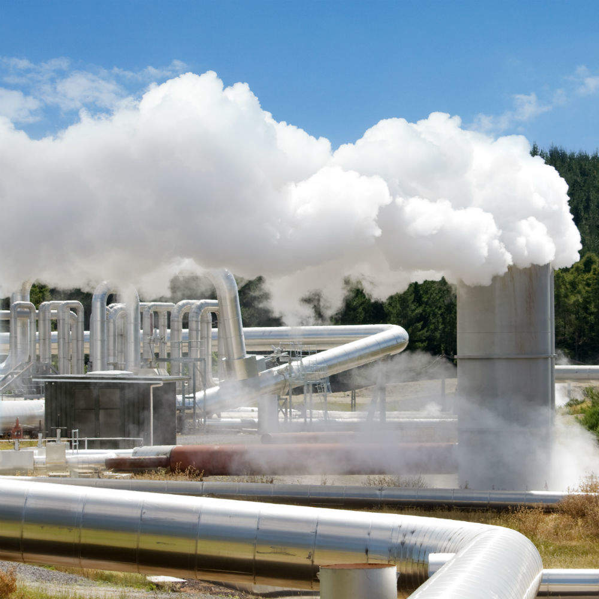

A energia geotérmica é uma fonte de energia renovável obtida a partir do calor no interior da terra.
O processo de aproveitamento dessa energia é feito por meio de grandes buracos no solo, pois o calor do nosso planeta fica abaixo da superfície terrestre. O termo "geotérmico" é derivado da língua grega e consiste nos termos geo (que significa terra) e therme (que corresponde à temperatura).
Vantagens
Desvantagens